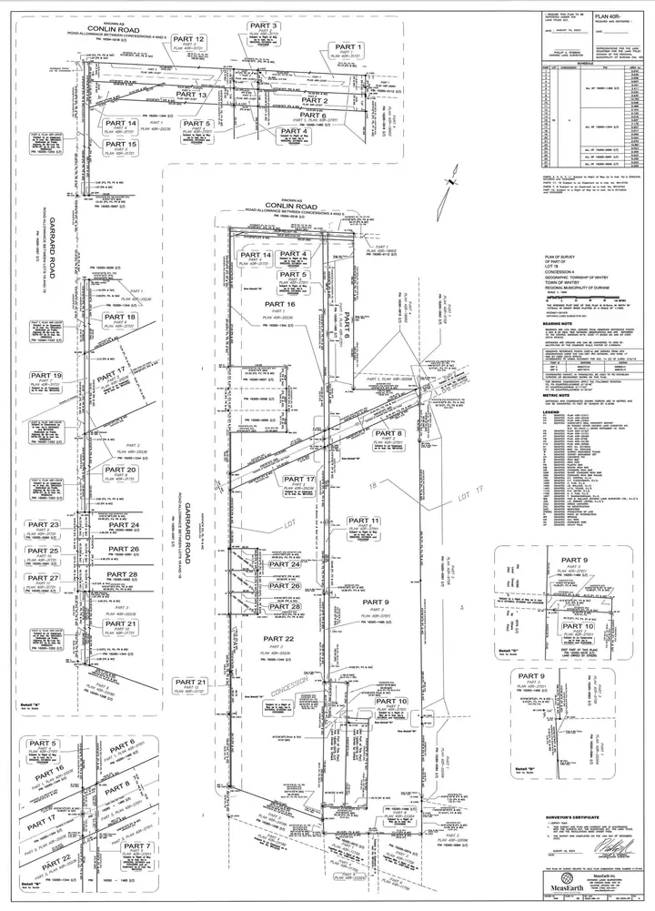

Home / Services / Easement, property and title reports
Easement, property and chain of title reports
Some questions about land are answered by the documents before anyone goes to the field. We research the title, plans and survey records and tell you, in plain language, what they mean for the property.
When you need it
When you need answers about a property
- You are buying and want to know what you are getting before you waive conditions
- There is an easement or right-of-way on title and you need to know where it runs and whether it is still in force
- A boundary, laneway or shoreline is in dispute and you need the history
- Your lawyer needs a surveyor's analysis for a title or boundary matter
- The legal description is old or unclear and nobody is sure what it covers
What you receive
Three reports, alone or together
- Easement report: each easement and right-of-way affecting the property, where it is, who benefits, what it allows and whether it has expired
- Property report: the legal description, registered plans, known boundary evidence, easements and anything worth checking before you commit
- Chain of title analysis: ownership and descriptions traced back through the deeds and plans to show how the parcel and its boundaries were created
- A sketch showing where each item sits on the property
- Copies of the documents we relied on
- A report signed by an Ontario Land Surveyor


A registered reference plan. Our reports explain how documents like this affect your property. Select to enlarge.
Good to know
Surveyors and lawyers answer different questions
A lawyer's title search confirms who owns the land and what is registered against it. A surveyor's report deals with where those interests are on the ground and how the boundaries came to be. Most clients use both.
Many reports can be completed from the office using registry documents and our survey records. Where the answer depends on what is on the ground, we add a site visit or a survey and quote it up front.
Older easements sometimes ended by their own terms years ago but still appear on title. When we find one, we say so, and your lawyer can apply to have it removed.
Common questions
Questions we hear most
Do you need to visit the property?
Often not. If the question turns on where something actually is, such as a driveway inside or outside a right-of-way, we will recommend field work and quote it.
Can the report be used in a dispute or in court?
Our reports set out the evidence we relied on and are signed by an Ontario Land Surveyor. If the matter may go to a hearing, tell us at the start so the report is prepared with that in mind.
What do the registry documents cost?
Documents and plans we have to buy are charged at cost. Your proposal explains how they are billed.
Related
Often needed with this
Surveyor's Real Property Report (SRPR)
The survey lenders, lawyers and municipalities ask for: boundaries, buildings and easements on one signed plan.
Boundary survey and staking
Corners found or set and the line marked on the ground, before you build a fence, driveway or wall.
Severances and reference plans
Reference plans for severances, lot additions, easements and shore road allowances, deposited at the Land Registry Office.
Request a quote
Get a fixed-fee quote for your report
Tell us the property address and what you are planning. We reply with a written, fixed-fee proposal, so you know the price before any work starts.
- The property address or legal description
- What you are doing: buying, building, fencing, severing
- Any old survey or drawing you have (you can attach it on the contact page), and your deadline

Prefer to talk it through?
705 434 0411Or ask us to call you, usually within minutes →244 Barrie St, Thornton, ON L0L 2N0
Your project
No obligation. We use your details only to prepare the quote.
The form did not load. Please call 705 434 0411 and we will take the details by phone.